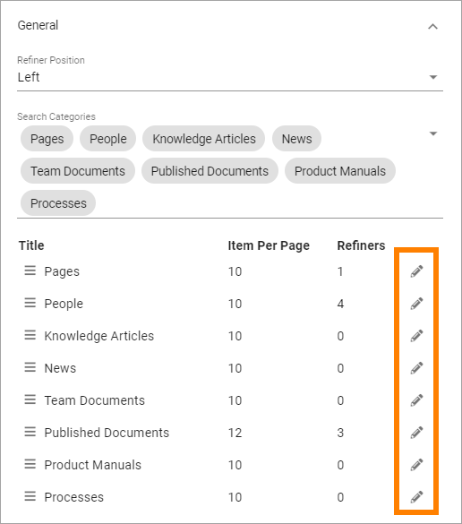

Advanced Search¶
When a search has been made in Quick Search, Advanced Search is available through a link at the bottom. Advanced search can also be made available using the Search block.
Below Advanced Search in Omnia up to 6.6 is described. For Advanced Search settings in Omnia 6.7 and later, see: Advanced Search settings 6.7

Something like this is shown:

To the left refiners are shown, if any are set up.
For more information on how to make Advanced search available through the Search block, see: The Search block
Use these settings for Advanced Search:

General¶
On this tab the following settings are available:

Refiner Positions: Select where the Refiners will be placed - Left or Right.
Search Categories: Open the list to add or remove Search Categories to use in Advanced Search.
Additional settings can be reached by clicking the pen for a Search Category:
Then these settings are available:

Row Limit: Select number of search result rows for each “page”.
Refiners: Use this option to add refiners for the Search Category (click the plus to add).
Order By: Set the sorting in the refiner’s lists; “Count” (=number of hits) or “Alphabetic”.
Refiner Limit: Set the number of refiner selections to be shown before a “Show more” link is displayed.
To delete a Refiner, just click the dust bin.
To create a new refiner, do the following:
click the plus.

Select property for the refiner.

Set “order By” and “Refiner Limit” and save.
Here’s an example of refiners for Pages, with 43 hits:

The user can now use the refiners to the left. Let’s say, for example, that the user knows the page is authored by Anna Karlsson - it’s just 5 pages:

Custom Search Target¶
If you activate this option you can change what will happen when a user clicks the Advanced Search link, for example after having made a Quick Search. This is useful for example if a specific Search Center should be used.